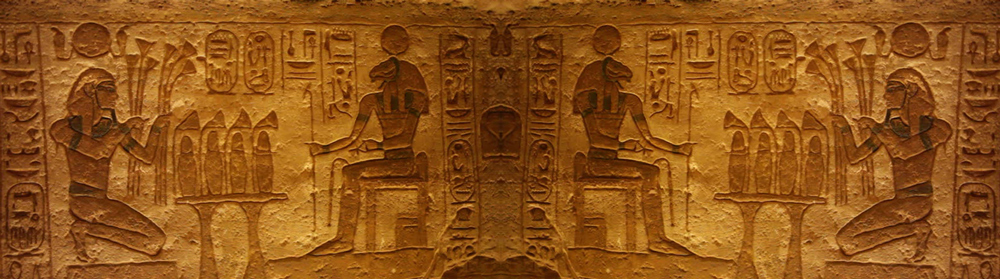
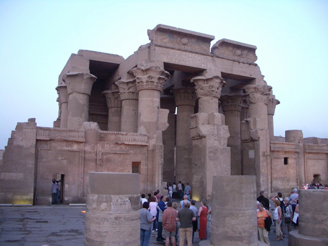
Today Kom Ombo (47 km north of Aswan and 168 km south of Luxor) may be a sleepy agricultural backwater surrounded by sugar cane fields, but this temple dedicated to the gods Sobek and Haroeris is a reminder of this area's importance in Ancient Egypt due to its prime position along the Nile. As you stroll through the temple's colonnades, gazing up at scenes of pharaonic propaganda, you can capture the ambience of this glorious history for yourself.
Kom Ombo's Pylon originally had two gateways, but the left-hand half has completely disappeared, and only the lower parts of the central pillar and the right wing survive. However the right-hand front wall has fabulous reliefs of the gods Sobek, Hathor and Khons; a hieroglyphic text of 52 lines; and the Roman Emperor Domitian wearing the crowns of Upper Egypt.
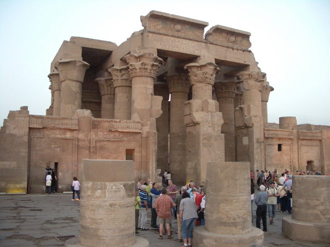
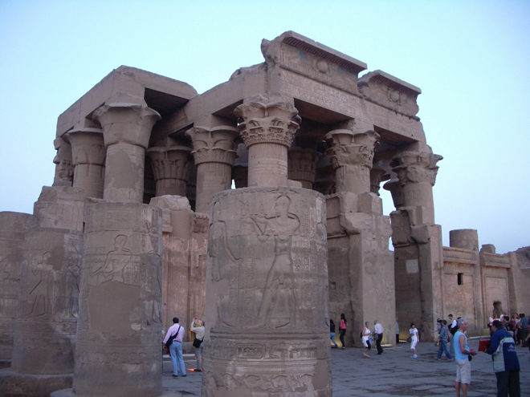
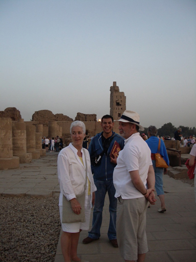
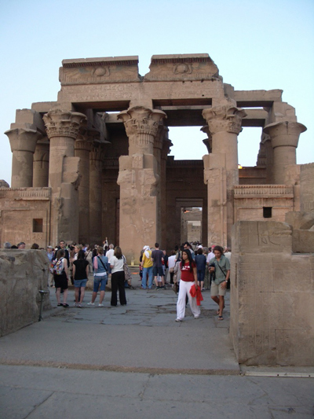
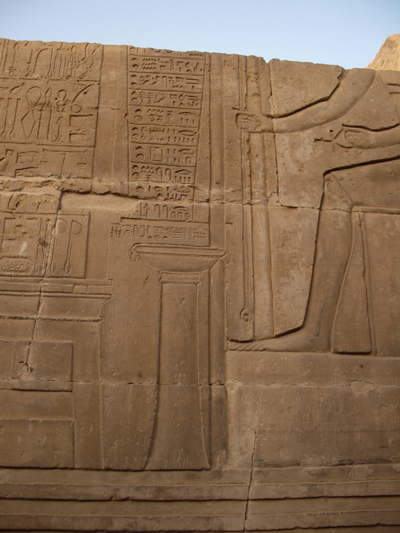
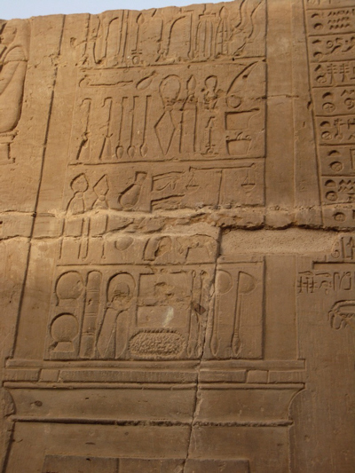
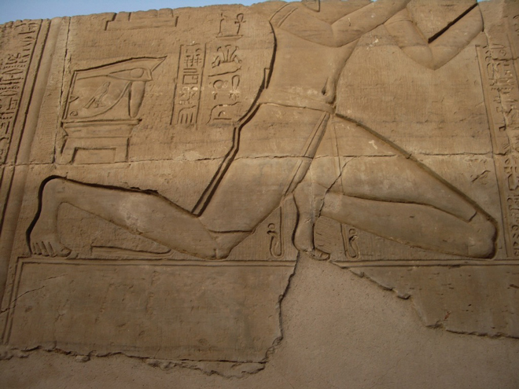
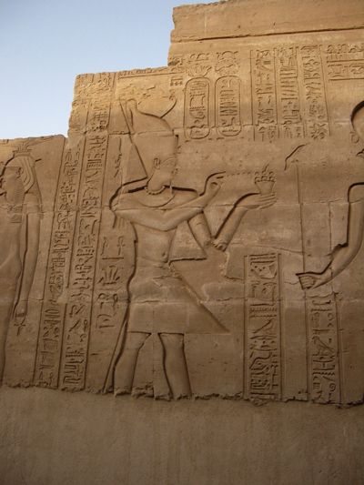
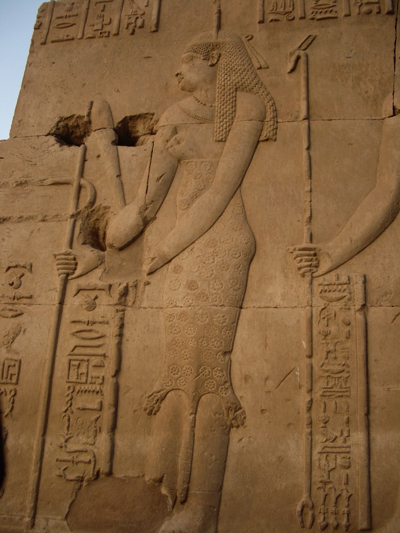
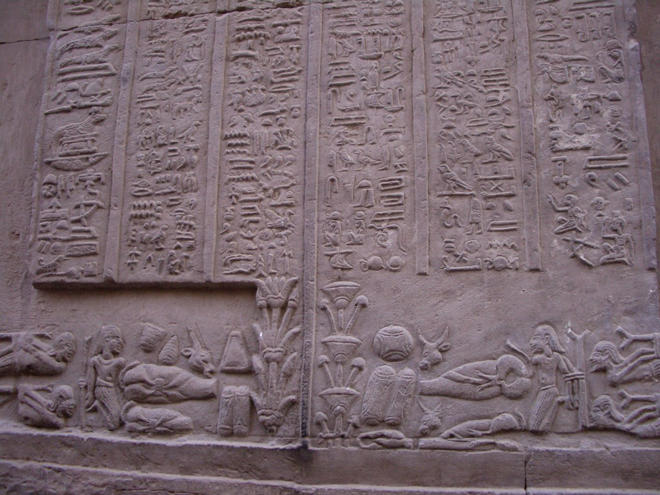
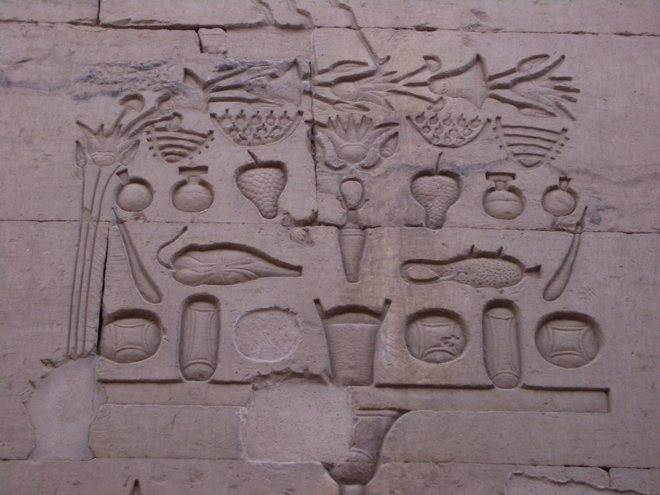
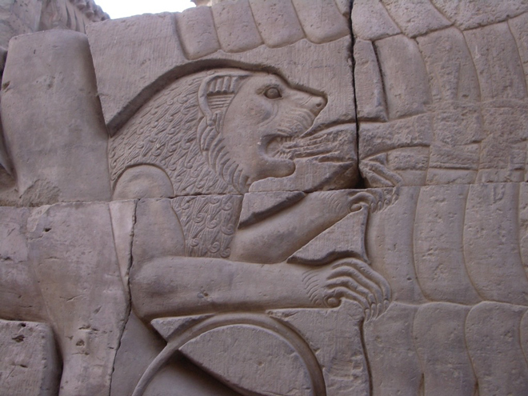
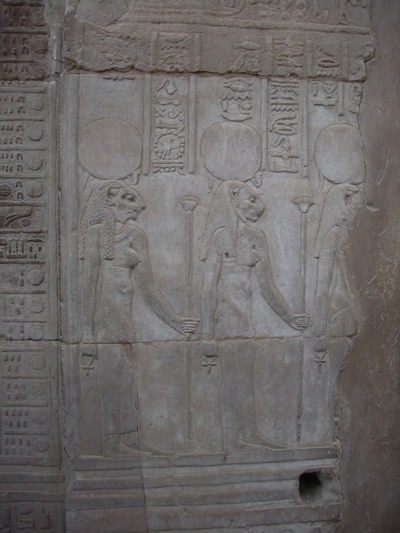
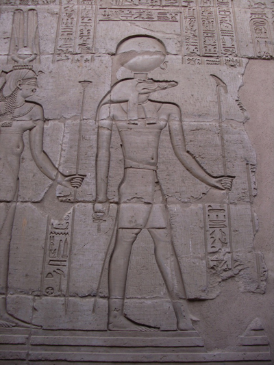
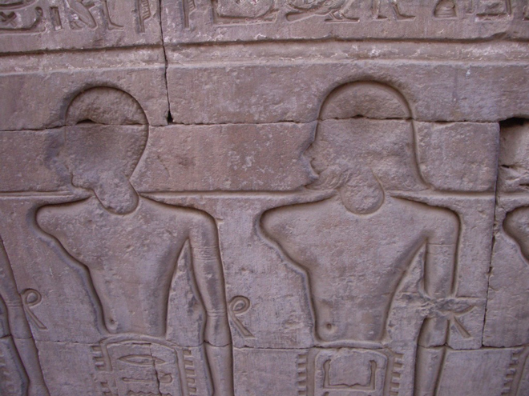
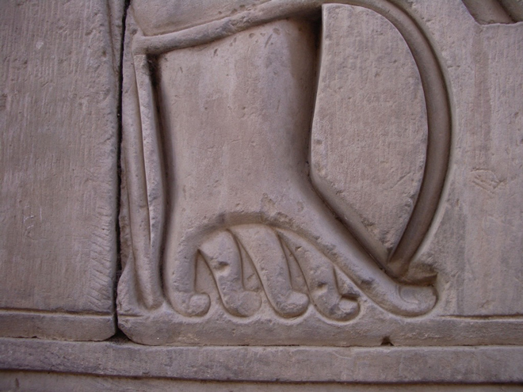
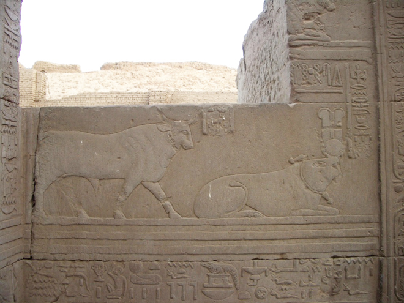
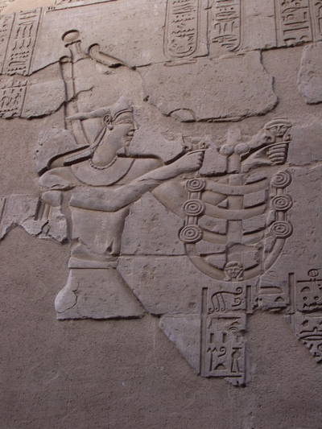
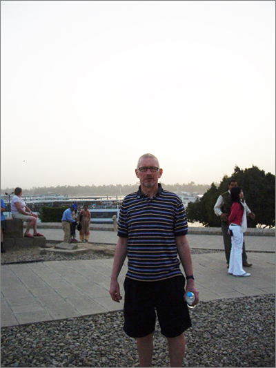
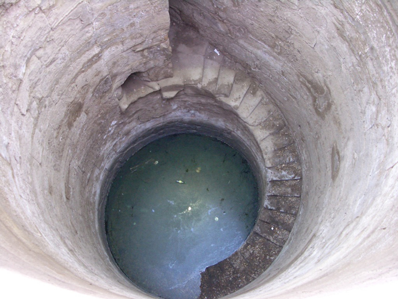
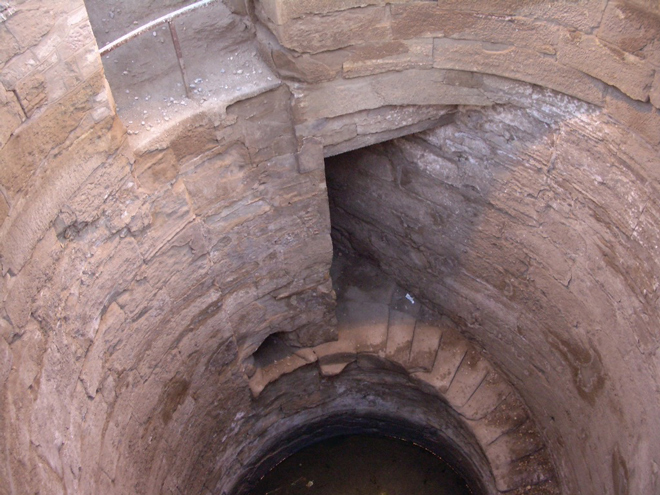
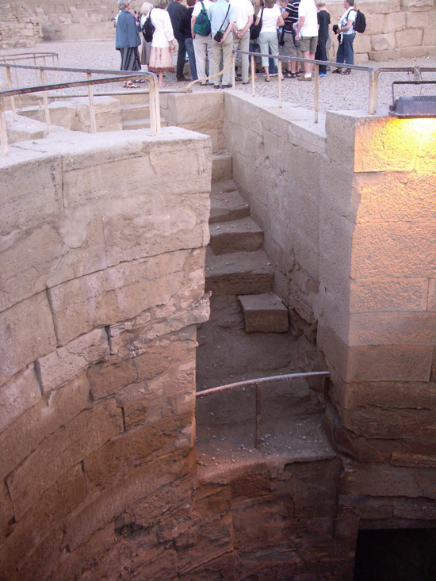